调研概述
本次调研聚焦于徐汇万科中心商办绿地。该综合体绿地采用了现代海绵城市与生态织网的设计理念，通过高低错落的植物群落（乔、灌、草、水生、地被）搭配，在繁华的都市商业核心区营造出了极具自然野趣与生态净化功能的城市绿肺。时值5月中旬（春夏交替），植物普遍进入高效生长期、结果期及部分夏花繁盛期，呈现出极高的生物多样性与美学观赏价值。
一、现代城市乔木篇
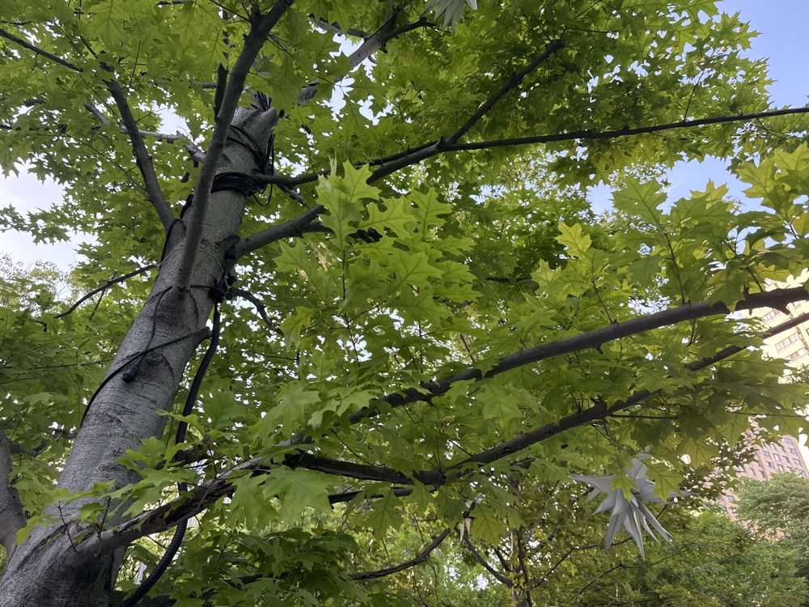
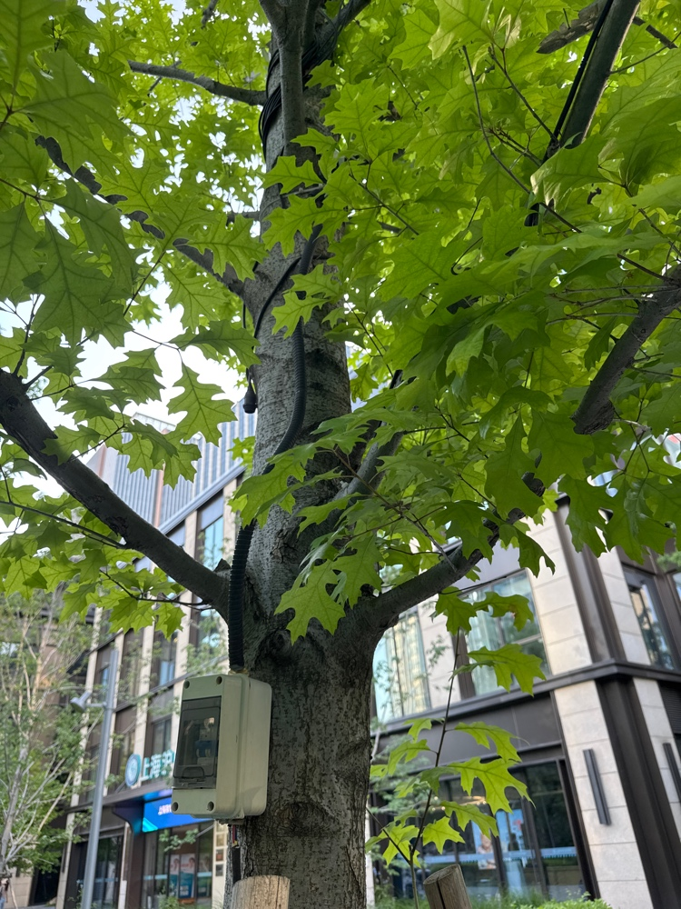
沼生栎 / 北美红栎组
一种从北美引进的高级彩叶大乔木。叶片呈现标志性的羽状深裂，缺刻极深，裂片尖端带有特异的细小针刺尖，此特征是红栎组与白栎组的核心区别。
5月物候：春夏交替时节展现鲜亮的翠绿色，树冠通透；其极强的景观价值将在11月转化为满树震撼的深红色。
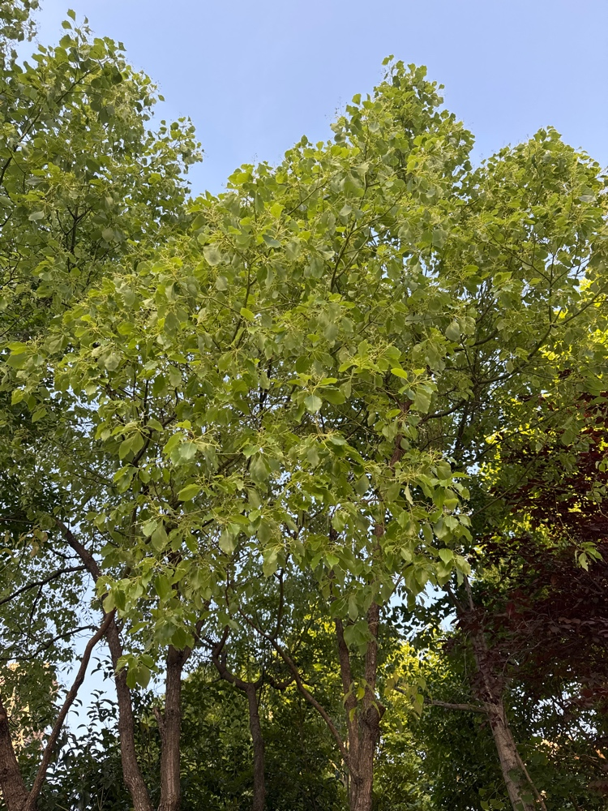
乌桕
极具中式古典野趣的传统优良乔木。叶片呈极其标准的“菱状卵形”，顶端拖着长长的尖尾。细长的叶柄使叶片对风力极为敏感，极易随风沙沙作响，形态灵动。
5月物候：树冠全面舒展，正值生机盎然的青绿期，顶梢开始孕育绿色的穗状花序。
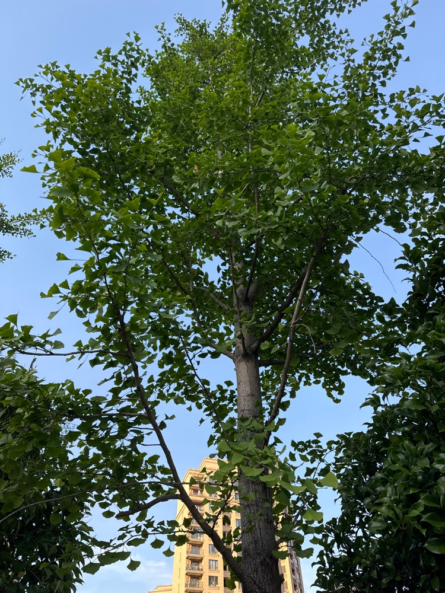
银杏
著名的“活化石”植物。独特的扇形叶片与二叉状平行叶脉在整个植物界独一无二。其树干挺拔，是现代城市大道及办公园区骨架景观的绝对核心。
5月物候：告别了春季的嫩绿，目前正值一年中叶片最为清脆、浓密的纯绿生长盛期。
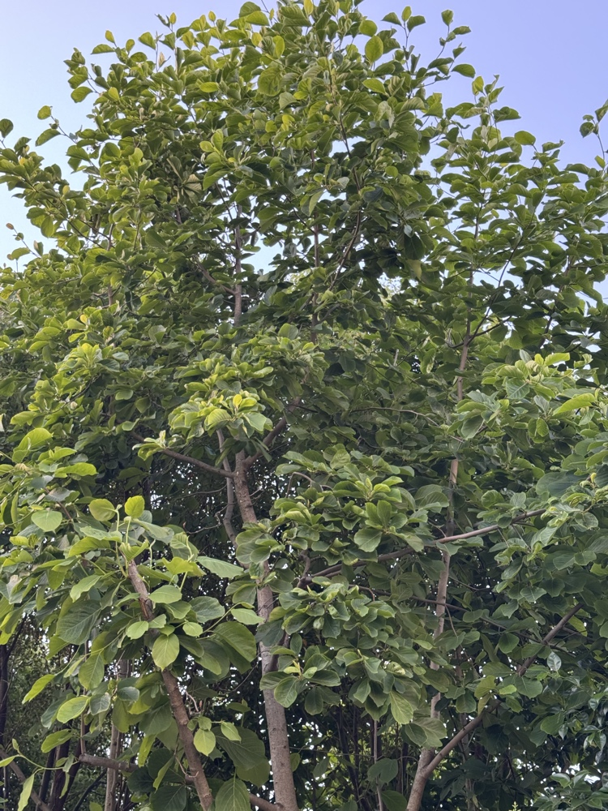
玉兰 / 白玉兰
典型的先花后叶植物。叶片呈倒卵形（上宽下窄），叶尖具有突然收缩的短小凸尖。树皮呈高级的灰白色且相对平滑。
5月物候：春季盛花期早已结束。当前进入全绿的“长叶期”与“结果期”，叶丛中挂着扭曲不规则的青绿色棒状聚合果。
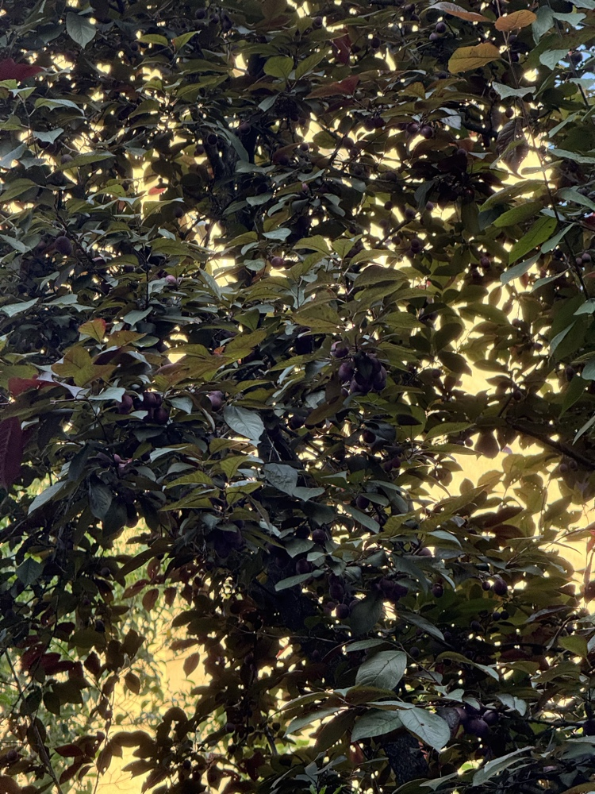
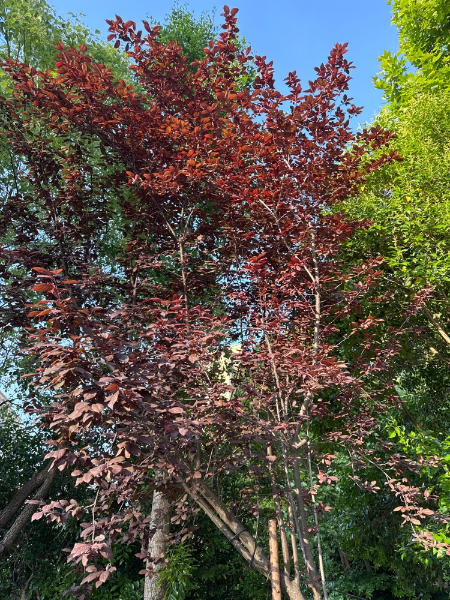
紫叶李 (红叶李)
常绿彩叶明星小乔木。全年生长周期均自带低调沉稳的暗紫红色皮肤，常被设计师作为色调调节树种，与周围的纯绿背景树形成强烈对比。
5月物候：正值果实成熟期，枝头挂满一串串圆滚滚、表面泛着深紫红色光泽的小李子果实。
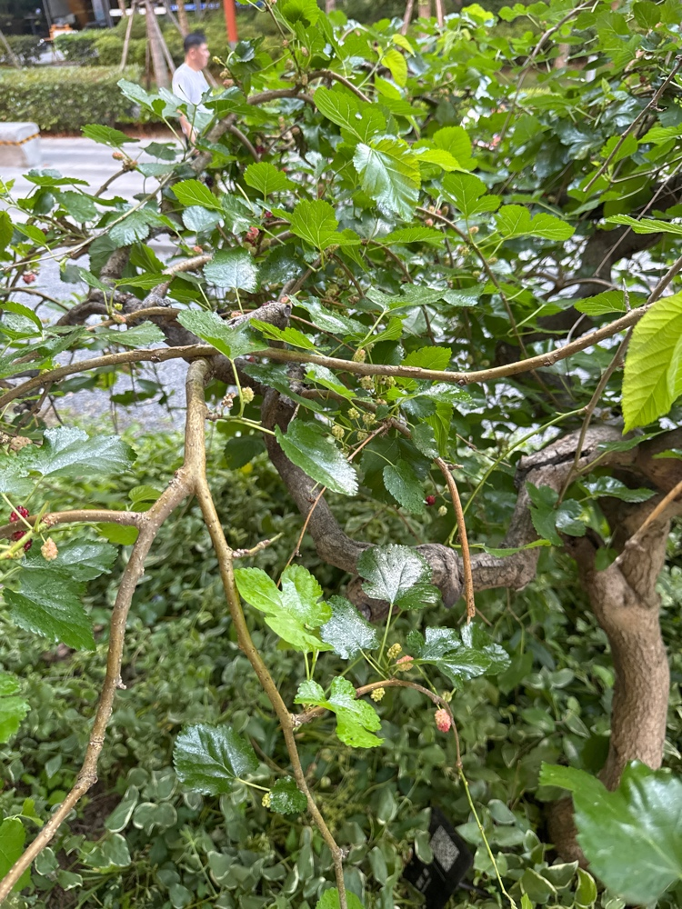
桑树
传统经济与生态文化树种。叶片边缘具有粗钝锯齿，基部呈心形。其枝条生机盎然，极富民间野趣。
5月物候：迎来高光的高效挂果期。枝条上挂满大量桑葚，呈现出“青黄-鲜红-紫黑”动态渐变的成熟过程。
二、色块与景观灌木篇
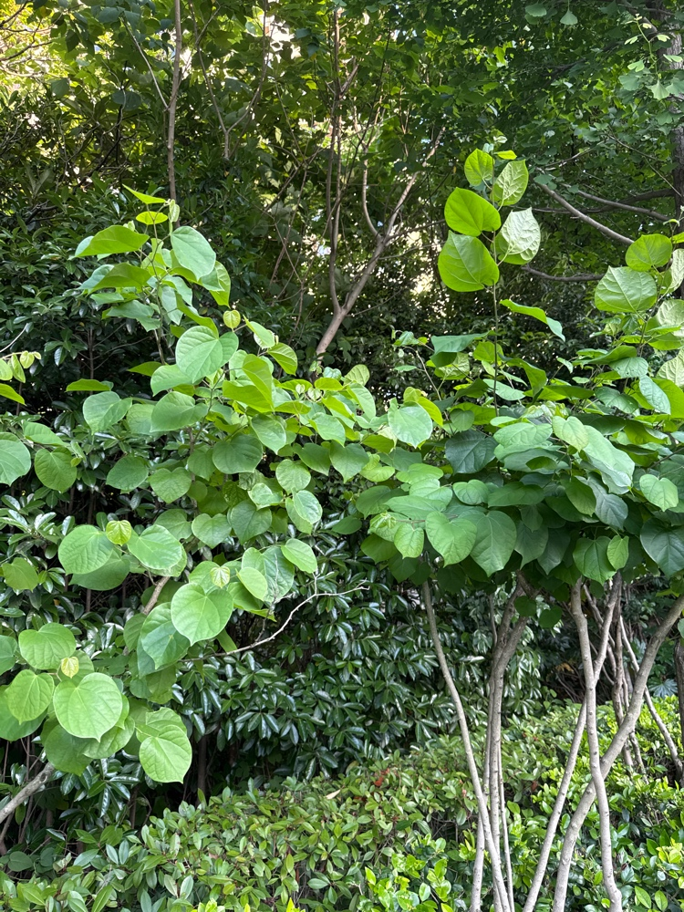
紫荆 (中国紫荆)
极具辨识度的丛生灌木。拥有完美的无锯齿心形几何叶片，基部掌状脉如伞骨般散开。天然喜欢多干从地面丛生上拔，常用作填补乔木下层空白。
5月物候：春季贴干盛开的紫花已退去，当前枝繁叶茂，左上角等老枝处已挂上一串串扁平的长条状扁豆荚果。
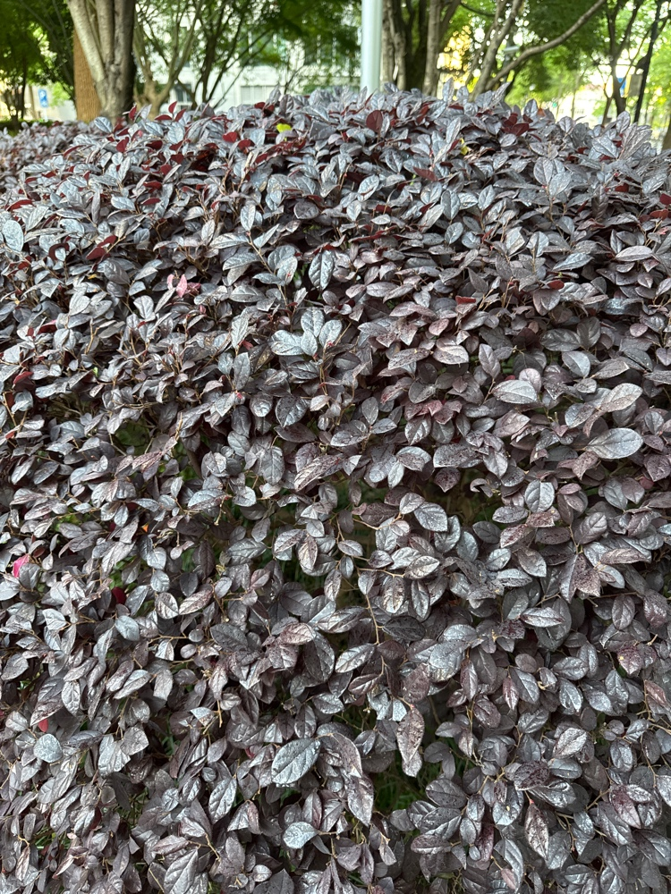
红花檵木 (红檵木球)
南方绿化带的“造型及色彩担当”。叶片全缘卵形，带有绛紫色或暗紫红色，表面因星状毛而具粗糙的纸质触感。极其耐修剪。
5月物候：早春如碎红丝带般的盛花期已过。当前被人工修剪成整齐圆润的“球形”或“色带围栏”，主攻紫色叶片的色块对比。
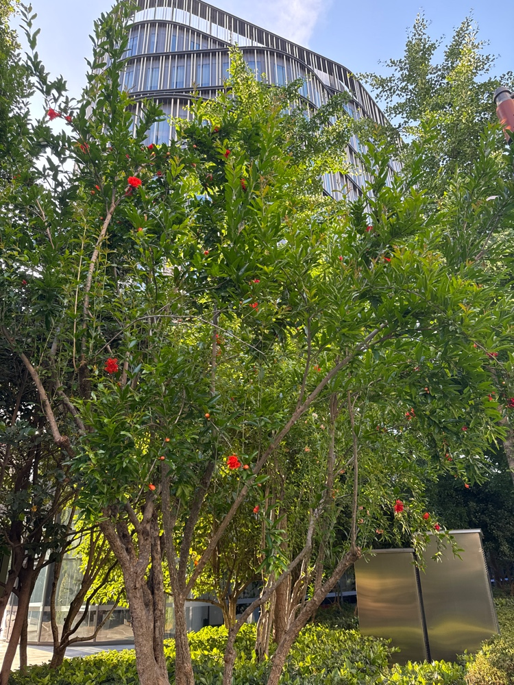
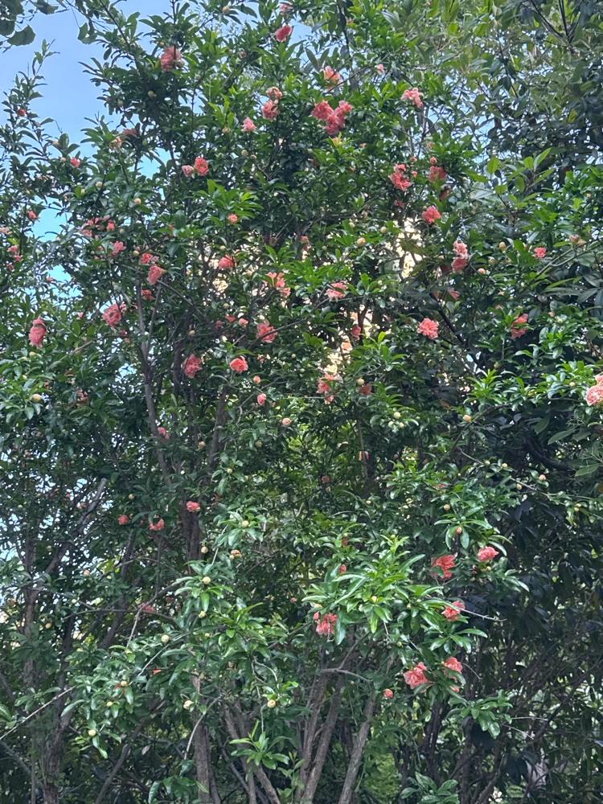
石榴树 / 重瓣花石榴
狭长油亮、无锯齿的对生叶片，树干丛生灰褐色。万科中心同时引入了可结果的单瓣石榴及专门赏花的“重瓣牡丹石榴”。
5月物候：正值“五月榴花照眼明”的超级盛花期。满树橙红/珊瑚粉的花瓣如揉碎的绸缎，基部带有厚实的洋梨状肉质花萼。
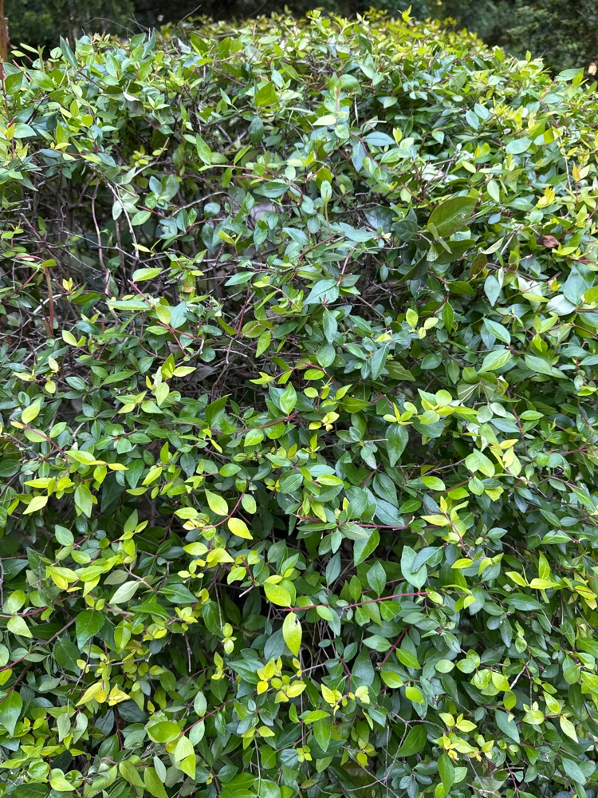
大花六道木
极其精致的常绿中小型灌木。最大特征是其新抽出的细长软弱枝条通体呈现尊贵的**红褐色**，与细小的对生油亮绿叶交织。
5月物候：处于极强的萌芽期，外围一圈新叶展现治愈的亮黄绿色。一两周后将迎来挂满白粉色小喇叭铃铛花的长达数月的超长花期。
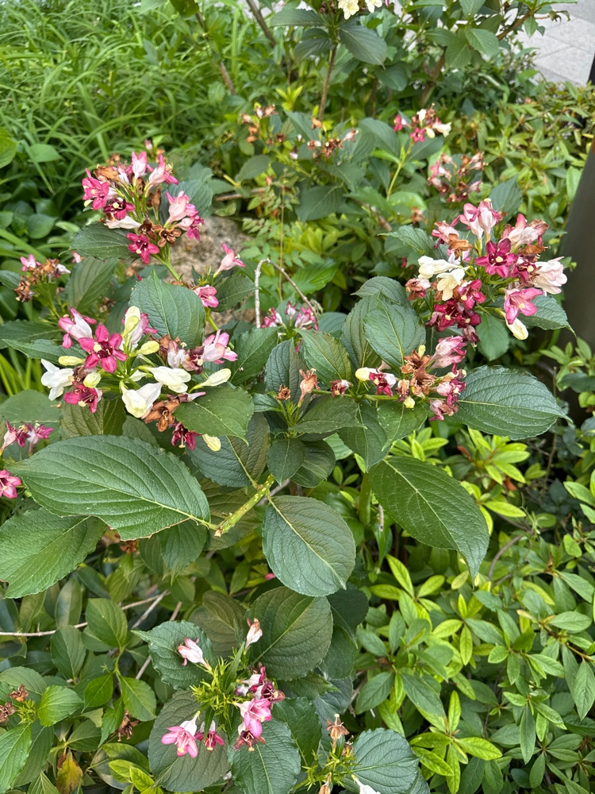
海仙花 (变色锦带)
对生倒卵形叶片，叶脉深深凹陷。其最神奇的特长是花色具有变色能力：刚开时为纯洁的白色或淡黄，受光照和授粉后逐步转为粉红，最终变为胭脂红。
5月物候：花期高光时刻，同一个花序上白、粉、红三色交织，如同“同树不同色”的魔术。
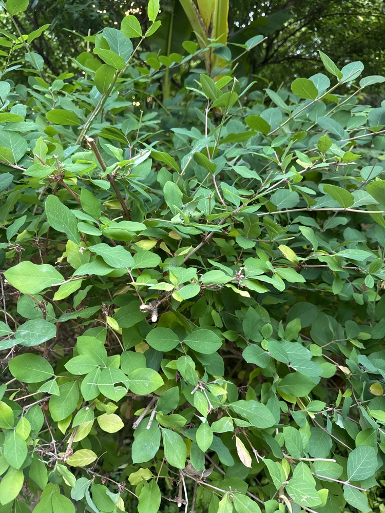
金银木 (金银忍冬)
枝叶开展的落叶灌木，叶片对生，花朵常由白转黄，因同株可见金银双色而得名。花后成对浆果渐次发育，是春夏交替时很容易被忽略的耐看细节。
5月物候：处于花后至幼果期，枝端叶片浓绿，果实开始在叶腋间成对显现。


杜鹃花 (毛鹃 / 锦绣杜鹃)
上海常见的色块灌木材料，叶片椭圆至倒卵形，枝叶密集，常被修剪成连续花带或低矮绿篱。盛花时色彩饱和，花后则回到细密油绿的背景层。
5月物候：多数已进入花后生长期，新梢与叶片接替花朵成为主要观赏面。
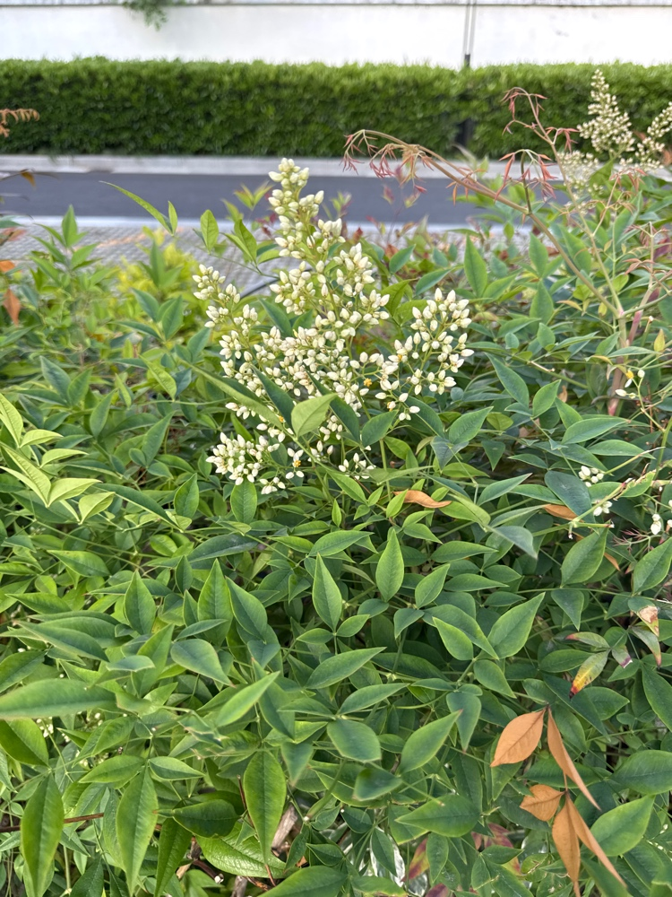
南天竹
姿态轻盈的常绿灌木，复叶层层展开，叶片细碎而有竹韵。新叶、秋冬叶色与红果都具观赏性，适合在林下与建筑边界处制造精致层次。
5月物候：新叶逐渐转绿，植株进入稳定生长期，叶丛层次清晰。
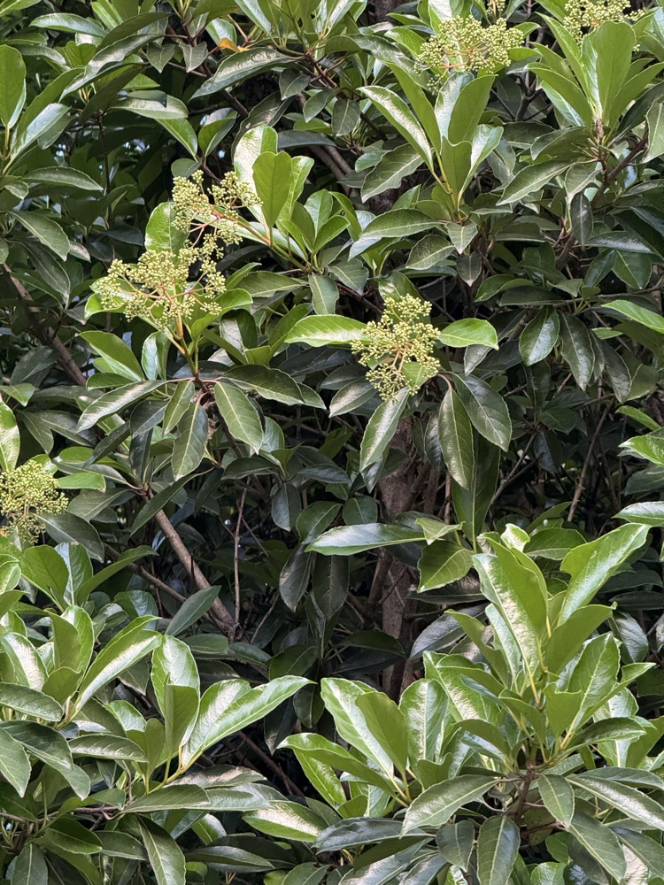
珊瑚树 (法国冬青)
大型常绿防御性灌木。叶片硕大、对生，厚实且表面覆盖极厚的蜡质层，在阳光下如同打蜡般闪亮。耐污染、隔音能力极强。
5月物候：正值花蕾期。枝条顶端顶着一蓬蓬绿色金字塔状的圆锥花序轴，密布着细小花蕾，即将开出白花。
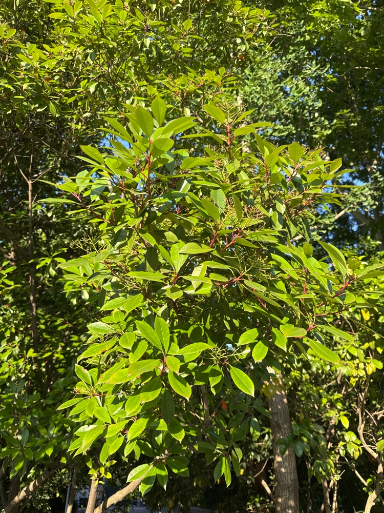
石楠
南方园林中常见的常绿骨架树种，可作绿篱、球形修剪或小乔木化配置。新梢常带红褐色，老叶厚革质且有光泽，花后残留的伞状花序轴也很有辨识度。
5月物候：多处于花后纯叶期，新梢与花序残迹共同形成清晰的枝端层次。
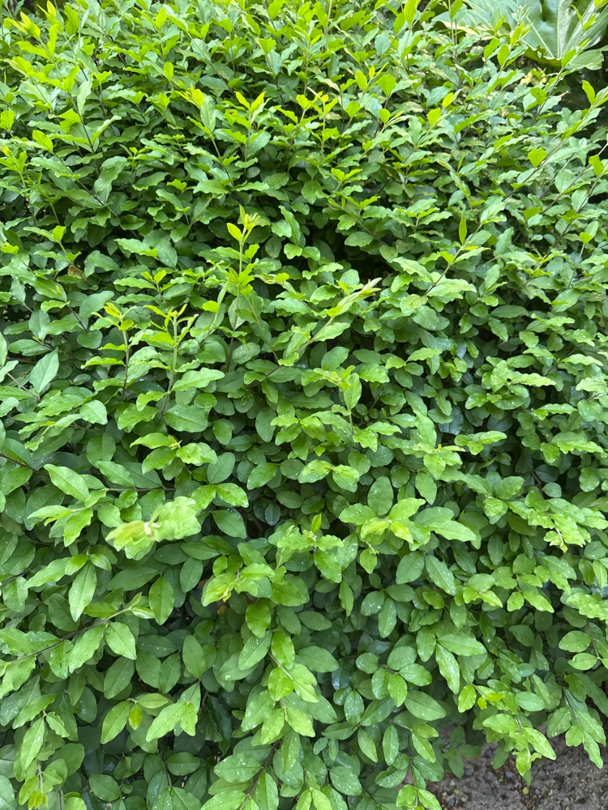
小叶女贞
绿化带中常用的低矮绿篱和方垛材料，叶片小而密，严格对生，边缘全缘。它的优势不在单株姿态，而在连续修剪后形成稳定、清晰的绿色边界。
5月物候：处于旺盛生长期，枝叶密集，为园区步道和花境边缘提供整齐的几何收边。
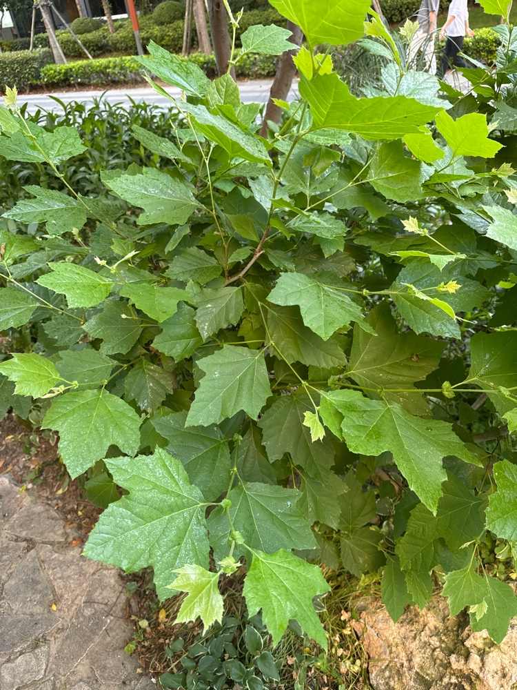
构树 (幼株)
城市荒地及园区边缘极为顽强的野生力量。叶片形状变化多端，幼期或新枝叶片呈夸张的3-5深裂（恐龙脚印状），表面布满硬毛，触摸有类似“魔术贴”的砂纸粘手感。
5月物候：在新长出的萌蘖枝上展现极强的野性与生命力。
三、多维立体欧式花境
在万科中心核心步道旁，设计师布置了教科书般高水准的多维立体欧式花境。景观通过红、黄、绿、紫多色植物交互，打破了传统绿化带的沉闷：
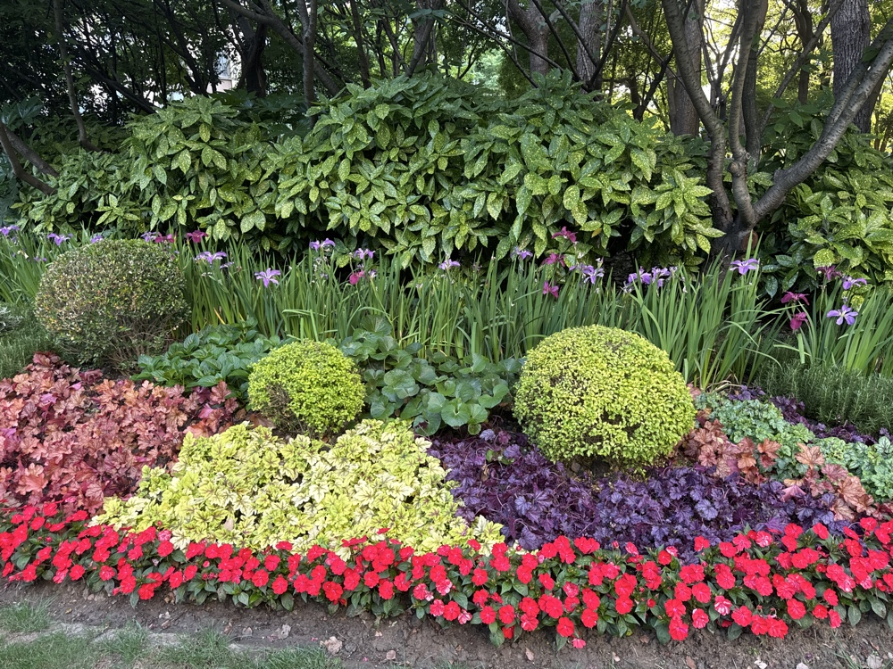
精细化地被与花境群落 Matrix
- 第一层（前沿滚边）：非洲凤仙花 —— 火红色的低矮大开花量草花，紧密排列形成极强视觉冲击力的分界红带。
- 第二层（中前调色）：矾根群落 —— 包含‘焦糖色’、‘石灰柠檬黄色’及‘深紫黑色（黑曜石）’三色交织，耐阴且色彩多变。
- 第三层（线条骨架）：金叶女贞球/黄杨球 —— 定期修剪的黄绿及深绿几何球体，提供景观的刚性空间骨架。
- 第四层（利剑打破）：鸢尾花丛 —— 如绿色利剑般挺拔直立的叶片，顶梢正盛开着尊贵的蓝紫色鸢尾花。
- 第五层（背景墙）：洒金东瀛珊瑚 —— 厚实大绿叶上洒满金黄色密集斑点，如同泼墨金粉，作高级耐阴背景。
四、生态驳岸与水生植物
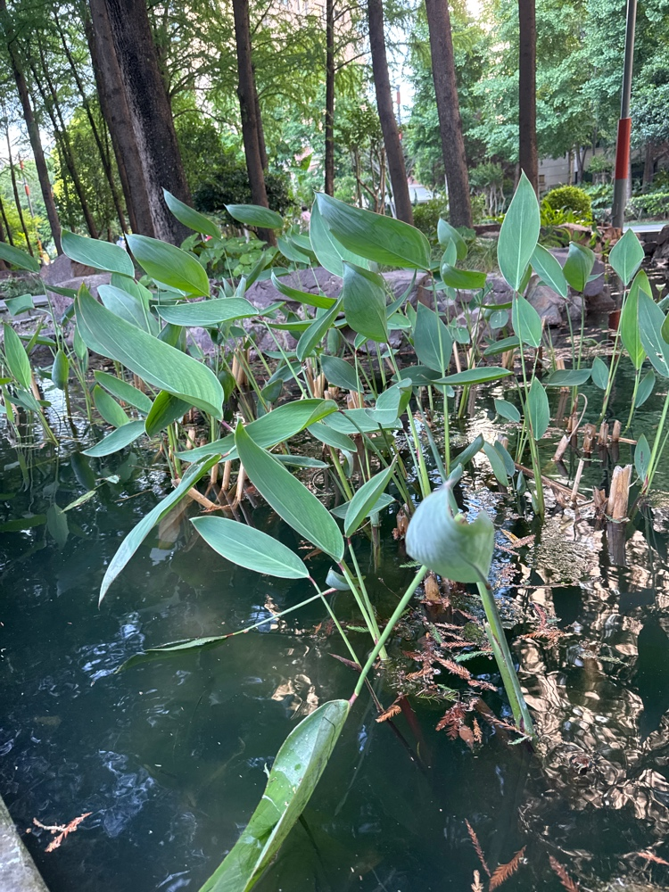
再力花 (水竹芋)
人工景观湖与生态水池绝对的水质净化功臣。长卵圆形的硕大叶片表面覆盖着一层高级冷调的**白粉状蜡质层**。最精准的识别秘诀在于：其叶片与长长叶柄连接的部位（叶枕）自带一圈醒目的**红褐色圈**。
5月物候：强力长叶积蓄能量期。叶柄强健挺拔直立，六月起将抽高开出紫罗兰色精致小花。
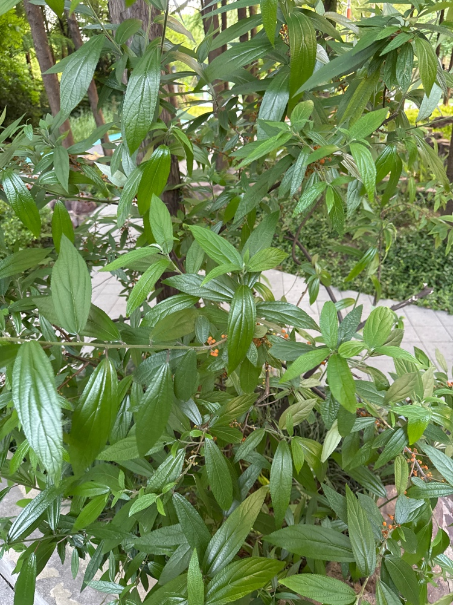
水麻
常见于山谷溪边的野趣灌木。细长披针形叶片表面有深深凹陷的“三出脉”和细密皱褶。其核心看点是贴着枝条关节（叶腋）紧密黏附生长的一圈圈橙红色小球。
5月物候：正值聚合果成熟的黄金季节，满枝挂满橙黄色“微型小橘子”般的浆果，是城市鸟类极好的夏日零食。
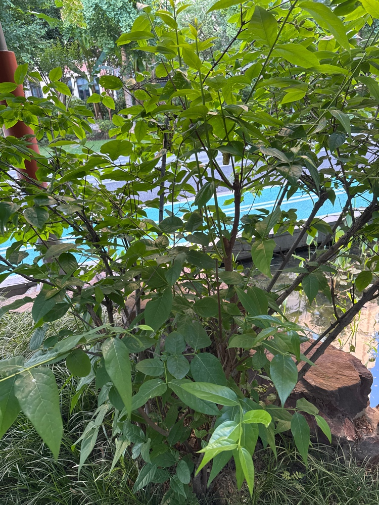
夏日版 蜡梅
冬季以蜡黄色芳香花闻名，入夏后则转入观叶与观果状态。叶片对生、质地略粗，枝条上可见纺锤状青绿色小坛子伪果，呈现出完全不同于冬日花期的安静面貌。
5月物候：花期早已结束，青绿色坛状伪果逐渐显眼，是水景假山边很有季节辨识度的细节。
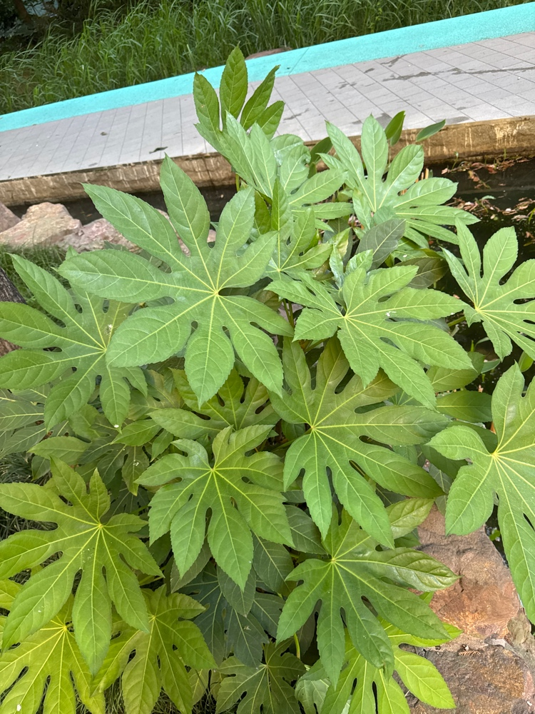
八角金盘
耐阴能力很强的常绿灌木，叶片巨大、掌状分裂，常有7-9个宽裂片，表面油亮厚实。它适合在树荫、水边和建筑阴面形成稳定的深绿色下层景观。
5月物候：叶丛饱满油绿，在溪边水石交界处和阴湿角落承担厚实的观叶背景。
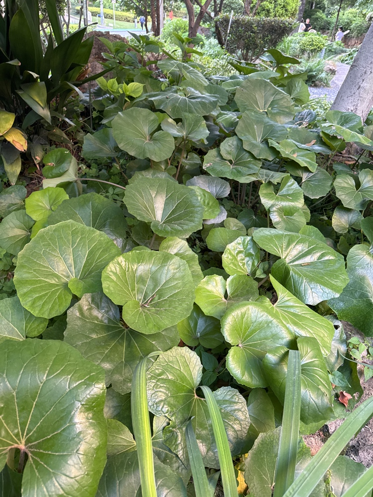
大吴风草
耐阴湿的常绿观叶草本，叶片大而圆，质地厚实油亮，常在水边、林下、石旁形成稳定的低层叶面。它能把硬质驳岸与假山边缘柔化成更自然的阴生植物带。
5月物候：处于旺盛展叶期，叶丛饱满，适合作为水景边缘与乔灌木下层之间的过渡植物。
五、假山石缝与地被微景观
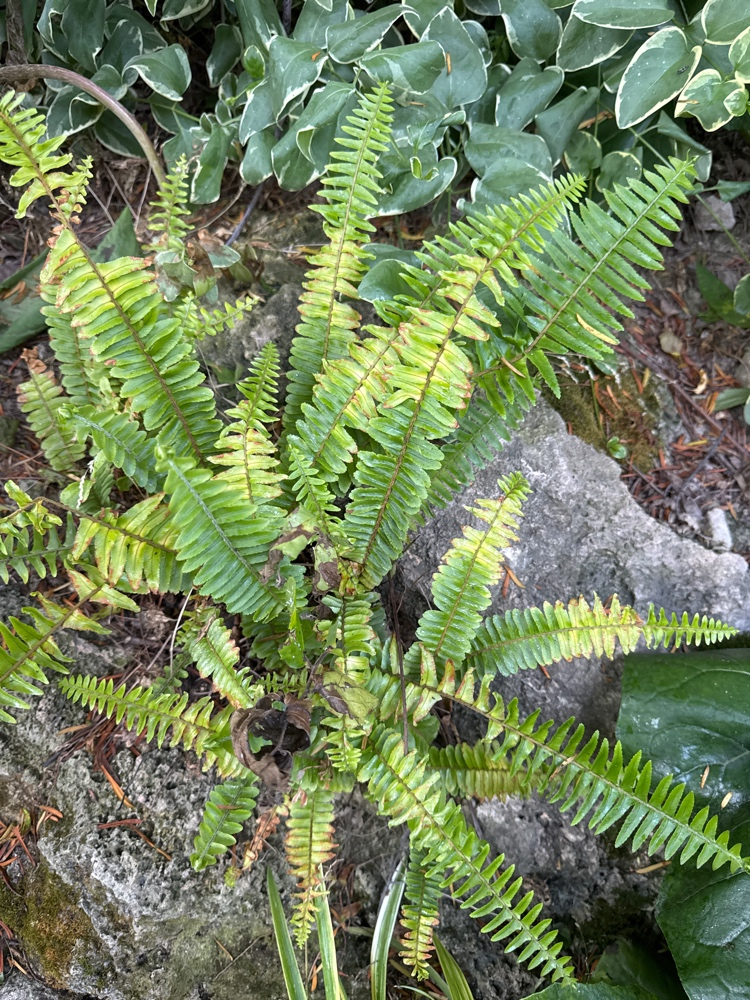
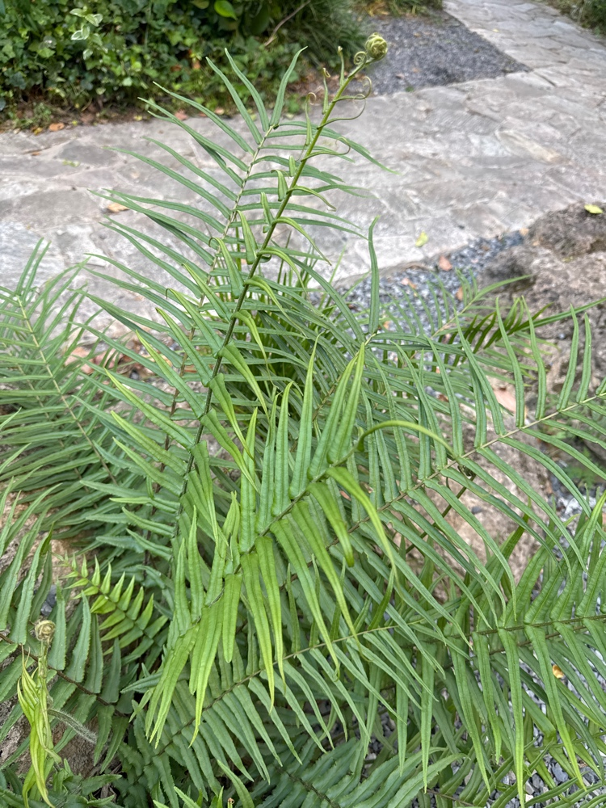
蜈蚣草 / 肾蕨 (拳卷叶)
生存在坚硬假山石（太湖石）缝隙和湿润阴暗面的强悍蕨类。新叶伸出时呈现极具辨识度的“小问号”或蜗牛壳状的**拳卷叶**。肾蕨小叶基部还带有一个微型“耳状突起”盖住主轴。
5月物候：正处于疯狂向上拔高、舒展羽状复叶的新生期。地下根茎有圆滚滚的肉质球茎蓄水。
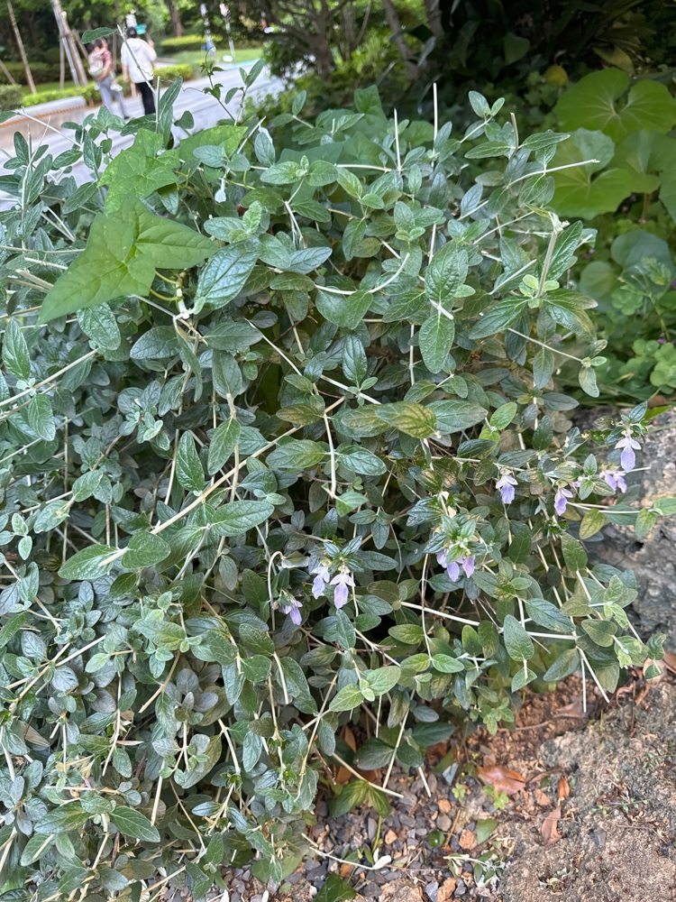
块根芦莉草 (块根蓝花草)
一种带有毛茸茸粗糙对生叶片的低矮地被。花冠呈淡紫色喇叭状。其最有趣的防伪标志是：花朵脱落后，5枚细长线形的绿色萼片会像“一根根绿色细针”一样支棱在枝头。
5月物候：正零星开着淡紫色小喇叭花，枝头留存大量针垫状的宿存萼片。
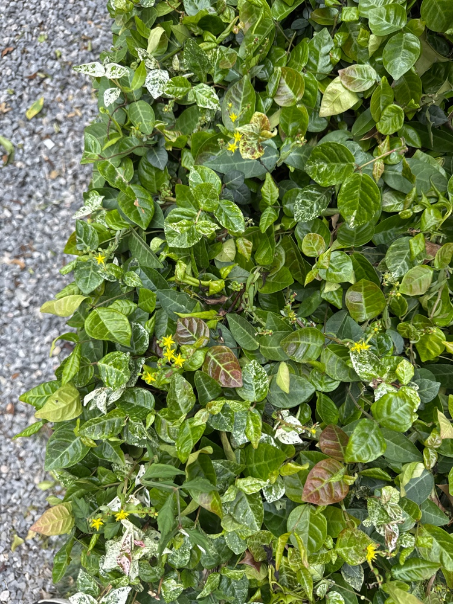
花叶络石
常绿藤本型地被，枝条匍匐或攀援，新叶常呈粉白、乳白与绿色斑驳变化，成熟后逐渐转绿。适合在林下、石边和花境前沿制造明亮的细碎色彩层。
5月物候：新梢生长活跃，彩叶最为醒目，是阴生地被中提升亮度的关键材料。
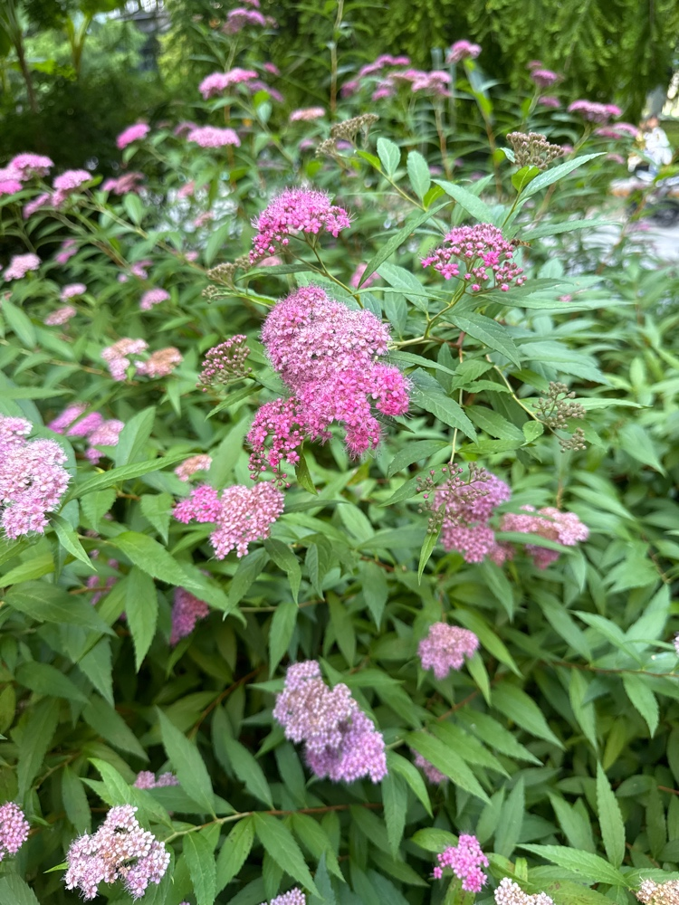
粉花绣线菊
低矮花灌木，小花密集成平头状伞房花序，雄蕊细长而外伸，使整簇花呈现毛茸茸的粉色烟雾感。常用于花境中层或地被灌木过渡带。
5月物候：正值粉红棉花糖般的盛花期，花序饱满，是地被微景观中很有柔软感的色彩焦点。
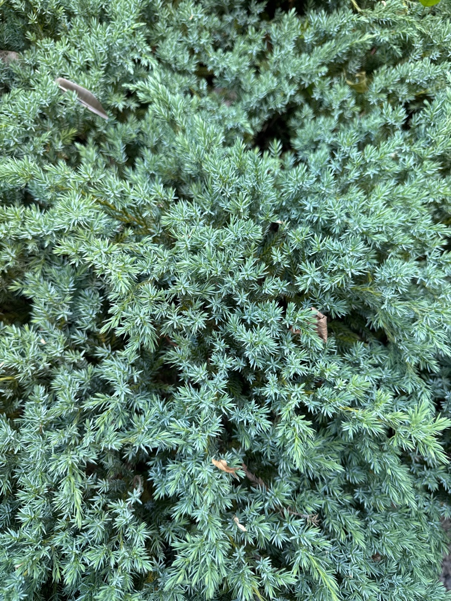
铺地柏
匍匐型常绿针叶灌木，枝条贴地伸展，针叶刚硬，常呈冷调蓝绿色或灰绿色。它能在假山、坡地和石缝边缘形成稳定的针叶地被层。
5月物候：枝叶进入稳定生长期，为假山石缝提供冷色调、低维护的生态软化层。
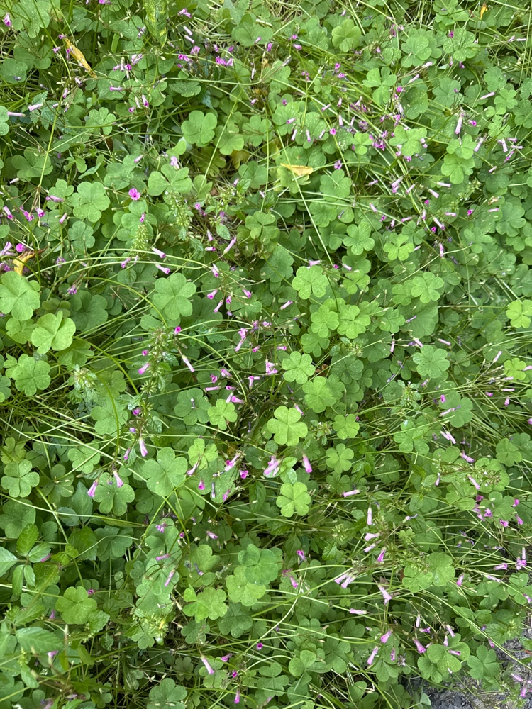
红花酢酱草
常被误认为三叶草的经典草本地被。每柄三片小叶，皆呈极其完美的**倒心形**（顶端内凹）。具有奇妙的“睡眠运动”，在阴天、傍晚或强光退去时，叶片与粉紫色五瓣小花都会折叠闭合。
5月物候：大面积覆盖于树阴草坪边缘，正处于白天盛开、夜晚闭合的规律花期中。